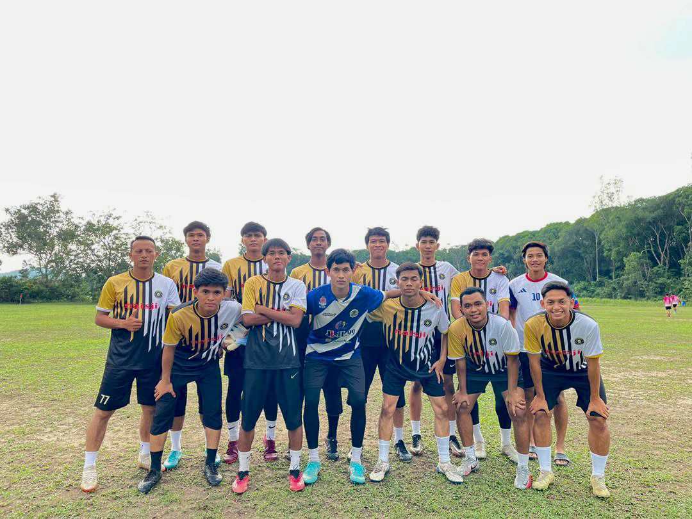

Sports In UiTM
Sports play a significant role in bringing people together, promoting health, and inspiring individuals to achieve their goals. From the roar of the crowd at a football match to the intense focus of an Olympic athlete, sports represent determination, teamwork, and passion.
Four friends, bound by passion, take the field for their university, chasing dreams under the floodlights. With every pass and every sprint, they move as one, their chemistry undeniable. As teammates, they weave through defenders with precision, understanding each other’s movements instinctively. Every match is a battle, testing their skill, endurance, and determination. But no matter the challenge, they stand together, pushing forward with unwavering belief. Beyond the game, their bond grows stronger through shared experiences, from early morning training sessions to late-night strategy talks. They push each other to improve, holding one another accountable and celebrating progress along the way. Victories bring moments of pure joy, while defeats teach them resilience, fueling their hunger to come back stronger. The roar of the crowd, the adrenaline of competition, and the pride of representing their university make every sacrifice worthwhile. More than just teammates, they are brothers, connected by a deep love for football. Their friendship extends beyond the pitch, built on trust, dedication, and a shared dream. Whether in triumph or struggle, they know they can rely on one another. For them, football is not just a sport—it is a way of life, shaping their character and defining their journey.